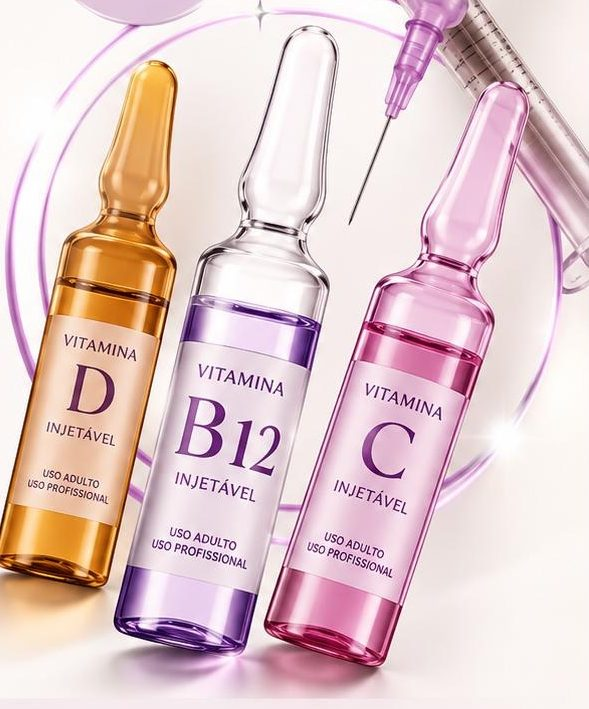
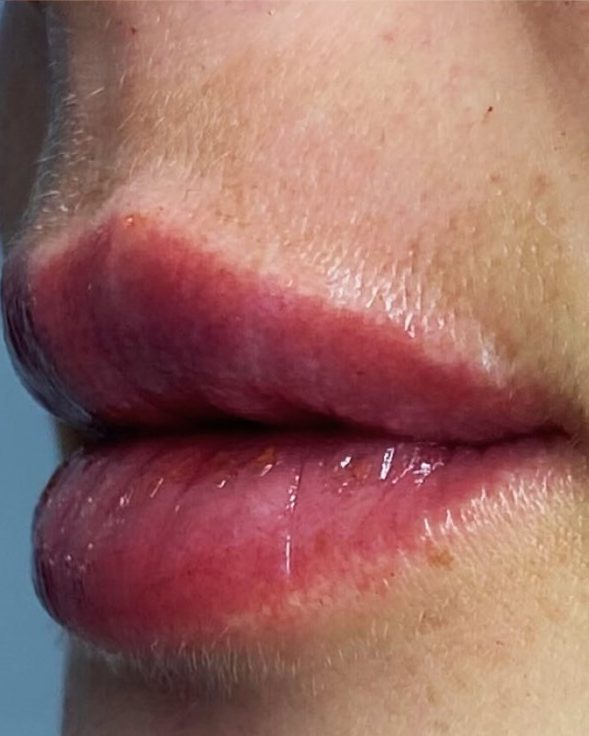

Bairro Brusque · Lages, SC
Trato a causa,
não só os sintomas.
Saúde integrativa com suplementação em fórmulas ativas e estética avançada sem exageros. Há 16 anos cuidando de Lages com a Dra. Patricia Cardoso, biomédica esteta.
- 16anosde clínica no bairro Brusque
- 4,8de nota no Google
- 8ativosem fórmulas ativas
- 2minpara fazer a pré-consulta
Como cuidamos
Três formas de cuidar de você, por dentro e por fora
-
Saúde integrativa
Consulta que investiga sinais, histórico, rotina e exames para entender a causa do que você sente.
- Tireoide, energia e imunidade
- Mulher 40+ e menopausa
- Análise dos seus exames
-

Suplementação
Fórmulas ativas injetáveis aplicadas na clínica e orientação das fórmulas manipuladas para tomar em casa.
- Vitaminas D, B12 e C
- Zinco, magnésio, selênio e outros
- Protocolo individual
-

Estética avançada
Harmonização elegante, sem exageros, com o método ReestrutFace e tratamentos para a pele.
- Toxina botulínica
- Preenchimento, fios e blefaro sem corte
- Manchas e textura
Saúde integrativa
Seu corpo dá sinais quando precisa de cuidado
Cansaço, baixa imunidade, queda de cabelo, indisposição, dificuldade para dormir e falta de energia não devem ser ignorados. Na consulta, a Dra. Patricia investiga a causa e só então monta o seu protocolo.
- Energia e disposição
- Imunidade
- Tireoide e metabolismo
- Mulher 40+ e menopausa
- Pele, cabelo e unhas
- Digestão
Como funciona
- 01
Consulta integrativa
Uma conversa completa sobre seus sinais, histórico e rotina, com análise dos exames que você tiver.
- 02
Protocolo individual
Aplicações injetáveis em fórmulas ativas aqui na clínica e orientação das fórmulas manipuladas para casa.
- 03
Acompanhamento
Reavaliações para ajustar o protocolo conforme o seu corpo responde.
Ativos em fórmula ativa
- Vitamina D
- Vitamina B12
- Vitamina C
- Magnésio
- Zinco
- Cobre
- Selênio
- NAC
Estética avançada
Elegante, sem exageros
A ideia é realçar o que já é belo. Cada procedimento é planejado para respeitar os seus traços: você continua sendo você, só que com cara de descansada.
Método da Dra. Patricia
ReestrutFace
Um conjunto de técnicas que reposiciona, reestrutura e refina os traços do rosto sem cirurgia. Estimula o colágeno, a proteína que dá firmeza à pele, e devolve contorno e sustentação. O resultado é um lifting natural.
- Toxina botulínica
- Preenchedores e fios
- Blefaro sem corte
- Lifting não cirúrgico
Toxina botulínica
Suaviza as linhas de expressão. É o primeiro passo para rejuvenescer com naturalidade.
Quero saber maisPreenchimento labial
Contorno, definição e volume na medida, para valorizar o sorriso com equilíbrio.
Quero saber maisFios e preenchedores
Reestruturação e reposicionamento para quem sente que o rosto está caindo.
Quero saber maisBlefaro sem corte
Jato de plasma para suavizar o excesso de pele das pálpebras e abrir o olhar, sem cirurgia.
Quero saber maisManchas por dentro e por fora
Despigmentação na clínica, cuidados em casa e protetor oral: a mancha tratada também na causa.
Quero saber maisPele e textura
Peeling Vulcan Ice, peeling de diamante, microagulhamento, dermaplaning e intradermoterapia.
Quero saber mais
E para o dia a dia, com a nossa equipe: limpeza de pele, design de sobrancelhas, extensão de cílios, unhas em gel e depilação.
Pré-consulta online
Mapeie seus sinais em 2 minutos
Marque o que você sente e o que quer cuidar, veja o seu resumo e envie para a clínica pelo WhatsApp.
Sem cadastro
Sem login e sem senha. Nada fica salvo no site.
Direto no WhatsApp
O resumo vai pronto para a clínica, e a equipe confirma o melhor horário com você.
Consulta mais rápida
A Dra. Patricia já começa sabendo o que você sente. Não é diagnóstico, é o ponto de partida.
- Foco
- Sinais
- Sobre você
- Resumo
Resultados
Naturalidade que aparece
ReestrutFace em andamento
Toxina, preenchedores, fios e blefaro sem corte com jato de plasma, 15 dias depois.
Preenchimento labial
Harmonia, definição e naturalidade para valorizar o sorriso.
Peeling Vulcan Ice
Pele mais clara, lisa e iluminada depois de 2 sessões.
Fotos de pacientes publicadas no Instagram da clínica. Resultados variam de pessoa para pessoa. Veja mais no @centrodeesteticajasmim
A profissional
Dra. Patricia Cardoso
Biomédica esteta, está à frente do Centro de Estética Jasmim desde 2010. Hoje, com uma equipe completa cuidando do dia a dia da clínica, se dedica à saúde integrativa e à estética avançada, onde criou o método ReestrutFace.
Que venham muitos outros anos cultivando beleza e com o mesmo propósito de sempre: cuidar com amor, respeitar cada beleza e acolher com verdade.
- Saúde integrativa e suplementação em fórmulas ativas
- Criadora do método ReestrutFace
- 16 anos cuidando de pacientes em Lages
Quem já passou por aqui
O que dizem sobre a Jasmim
4,8 no Google · 43 avaliações
Um ambiente acolhedor, atendimento impecável e muito profissionalismo.
Ótimos profissionais, serviço completamente técnico e confiável.
Recomendo muito para quem quer um ótimo resultado na sua sessão!
Horários
Atendimento de terça a sábado
Horário de atendimento
| Terça | 13h30 às 19h |
|---|---|
| Quarta | 13h30 às 20h |
| Quinta | 13h30 às 19h |
| Sexta | 9h às 12h · 13h30 às 19h |
| Sábado | 9h às 12h |
| Domingo e segunda | Fechado |
Localização
Bairro Brusque, Lages
R. Cruz e Souza, 258, Brusque, Lages, SC · CEP 88503-001
Fachada iluminada, na altura do número 258
Como funciona a consulta integrativa?
É uma conversa completa sobre seus sinais, histórico, rotina e alimentação, com análise dos exames que você tiver. Dela sai o seu protocolo individual, com o que fazer aqui na clínica e o que tomar em casa.
Posso agendar direto pelo site?
Pelo site você faz a pré-consulta e diz o período que prefere. A equipe confere a agenda e confirma o horário com você pelo WhatsApp.
A consulta tem valor?
Sim. O valor da consulta e os horários disponíveis são informados pelo WhatsApp.
Preciso levar exames?
Se tiver exames de sangue recentes, traga ou envie pelo WhatsApp. Se não tiver, a Dra. Patricia conversa com você na consulta sobre o que vale investigar.
A suplementação é injetável ou oral?
Os dois caminhos existem: aplicações injetáveis em fórmulas ativas aqui na clínica e orientação de fórmulas manipuladas para tomar em casa. O que entra no seu protocolo depende da sua avaliação.
A harmonização fica artificial?
A nossa linha é elegante, sem exageros. O objetivo é realçar o que já é belo e respeitar os seus traços.
Vocês atendem aos sábados?
Sim, das 9h às 12h. De terça a sexta atendemos à tarde, e na sexta também de manhã.
Pré-consulta online
Venha conhecer a Jasmim
Faça a pré-consulta em 2 minutos ou chame no WhatsApp. A equipe confirma o melhor horário com você.
Fazer minha pré-consulta